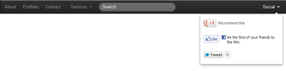

Bootstrap 导航条
简介
Bootstrap を使用すると、静的なナビゲーションバーを作成できます。このチュートリアルでは、その方法を説明します。
コンテンツを含む HTML5 ページを使用し、ヘッダーのナビゲーションバーを追加する方法を見ていきます。以下が最終的な出力結果です：

以下は、何も含まないページのHTML5コードです。
<!DOCTYPE html> <html lang="en"> <head> <meta charset="utf-8"> <title>Bootstrap基本的基于与标签的导航</title> <meta name="description" content="Bootstrap Basic Tab Based Navigation Example"> <link href="../bootstrap/twitter-bootstrap-v2/docs/assets/css/bootstrap.css" rel="stylesheet"> </head> <body> <!-- 我们将在这创建导航 --> </body> </html>
ナビゲーションを含む基本構造を作成するには、上に示したHTML5コードの中で、直後に
ラベルの後に以下のコードを挿入します：<div class="navbar navbar-fixed-top"> <div class="navbar-inner"> <div class="container"> <!--navigation does here--> </div> </div> </div>
では、让我们以下のコードに置き換えて、ナビゲーションの最初のセットを作成します。ここでの "brand" クラスは異なる方法で表示されることに注意してください。これは、会社名や組織名を表示するために使用できます。
<ul class="nav"> <li class="active"> <a class="brand" href="../index.html">runoob</a> </li> <li><a href="../index.html">About</a></li> <li><a href="../index.html">Portfolio</a></li> <li><a href="../index.html">Contact</a></li> </ul>
ドロップダウンメニューを作成する必要がある場合は、最後のコードブロックに表示されるHTMLコードの直後に、以下のコードを挿入します。
<ul class="nav"> <li class="dropdown"> <a href="../index.html" class="dropdown-toggle" data-toggle="dropdown"> Services <b class="caret"></b> </a> <ul class="dropdown-menu"> <li><a href="../index.html">Web Design</a></li> <li><a href="../index.html">Web development</a></li> <li><a href="../index.html">Wordpress Theme development</a></li> </ul> </li> </ul>
ただし、BootstrapのドロップダウンメニューはJavaScriptを必要とするため、HTMLページに以下の2行のコードを挿入する必要があります。これらは